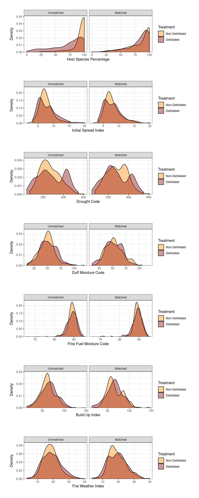

fire_insect_co-occurrence_report
Overview
Background
Insect defoliation is the most widespread natural disturbance agent in the eastern boreal forest, affecting more forest area than any other disturbance (McCullough et al 1998, Volney and Fleming 2000). The eastern spruce budworm (Choristoneura fumiferana Clemens) causes the most extensive damage among insect defoliators due to the large scale and high severity of its outbreaks (Navarro et al 2018). Native to North American coniferous forests, the primary hosts of the eastern spruce budworm (SBW) are balsam fir (Abies balsamea), which spruce (Picea glauca), and increasingly black spruce (Picea mariana) due to climate warming-induced phenological synchrony (Pureswaran et al 2019).
SBW defoliation can lead to mortality if it continues for three or more consecutive years. However, more commonly, it results in crown and branch mortality and reduced growth in balsam fir and secondary hosts (MacLean 1984, Bergeron et al 1995, Nealis and Régnière 2004, Bouchard et al 2005). The long-term effects of SBW defoliation on vegetation dynamics are exacerbated by climate warming (Subedi et al 2023). The spatial legacies of SBW outbreaks can create landscape heterogeneity in vegetation patterns that can persist for decades, influencing the likelihood and severity of future disturbances (Taylor and MacLean 2009, James et al 2017).
In 2023, Canada experienced its most severe wildfire season on record, with 18.6 million hectares of forest burned. This, coupled with projected increases in the frequency and severity of outbreaks due to climate warming (Régnière et al 2012, Bouchard et al 2018, Weed et al 2013), raises concerns about the influence of the large-scale spatial legacies of outbreaks on wildfire impacts (Stocks 1987, Candau et al 2018, Fettig et al 2022). Adding to this concern is the climate-induced transition of black spruce from non-host to host species (Pureswaran et al 2019). Black spruce is the most widespread conifer in the eastern boreal forest. They are also considered to be the most flammable due to their resinous needles and their dense, low-lying branches that can easily catch fire and promote vertical spread of ground fires to high-severity canopy fires (Barrett et al 2010, Massey et al 2023).
Wildfire burn severity is a measure of biomass and soil change used to gauge how intensely an ecosystem was impact by fire (Lentile et al 2013). Burn severity is crucial to the structure and function of post-fire boreal ecosystems, influencing post-fire seed sources, aerial bud banks, soil nutrient availability and forest substraties (Splawinski et al. 2019, Brown and Johnstone 2012, Arseneault 2001), which limits post-fire tree establishment and growth (Johnstone and Chapin 2006, Johnstone and Kasischke 2005). Consequently, post-fire recovery trajectories are closely linked to the degree of burn severity (Whitman et al. 2018a, Strand et al. 2019, Lentile et al. 2007).
A number of studies have posited that that spatial legacies of SBW defoliation will influence wildfire impacts on forest ecosystems (Cohn et al 2014; James et al. 2017). While there is evidence that supports insect-induced changes in vegetation structure prior to wildfire (Watt et al 2018, 2020), the causality between these changes and wildfire impacts such as changes in severity remain uncertain. This is because in order to elucidate the potential causal impact of spruce budworm legacies on fire severity requires a control observation for comparison. However, most studies rely on both historical defoliation and observational wildfire data. Identifying a control group is difficult as factors that influence fire outcomes include slope, vegetation type, or vegetation moisture. Therefore, establishing a control observation requires identifying statistically similar controls that burned under similar conditions. Fortunately, pre-processing methods such as propensity score matching are an established method for identifying such quasi-experimental controls in wildfire studies (Bustic, Woo x2 etc). Using pre-processed datasets, analysis such as linear regression can be used to predict average defoliation effect on wildfire severity.
In observational studies, propensity score matching (PSM) is a common statistical technique applied to create a control group that is comparable in confounding variables to a treatment group in studies where treatments are unable to be randomly assigned. For each observation a propensity score (PS) is calculated which reflects the probability of receiving the treatment based on observed characteristics (i.e., potential confounders). Using propensity scores researchers can match participants from the treatment group with those from the control group based on the similarity between scores. The degree of similarity can be selected by researchers. Referred to as the caliper, it is suggested that the degree of similar is within +/- 0.3. By simulating the conditions of a randomized controlled trial, the process of PSM helps to balance the groups on observed characteristics, thereby reducing bias and allowing for a more accurate estimate of the treatment’s impact. Using the balanced dataset, researchers are able to provide a more robust and reliable estimate of the treatment’s effect.
In this study, we aim to reduce the uncertainty surrounding the causal impacts of spatial legacies of SBW defoliation on wildfire severity in Ontario’s boreal shield. We applied PSM to create a balanced control-treatment experimental design with observation data on wildfire-defoliation co-occurrences. We identified wildfires-defoliation co-occurrences between 1985-2012 using aerial-survey defoliation data and remotely sensed wildfire data. For each area, we quantified median burn severity and mean recovery magnitude. Spectral recovery trajectories were used to estimate post-fire recovery, as recent research shows they are effective and accurate at capturing post-fire structural recovery patterns in North American boreal forests (Smith‐Tripp et al 2024). Using these data, we estimated the average treatment effect (ATT) of defoliation on wildfire impacts and long-term outcomes.
Question
How does the spatial legacies of defoliated areas affect (a) burn severity and (b) recovery magnitude?
Are there hotspots where defoliation has a more pronounced effect?
- Are there other factors that interact with defoliation to influence spatial patterns of burn severity and recovery magnitude in defoliated areas?
Methods
Study area
We focused our analysis on the boreal shield ecozone of Ontario (65,336,847 ha) Figure 1. There is a climatic gradient across this region, with colder and drier conditions in the west and more precipitation to the east (Girardin and Mudelsee 2008). The area is predominantly covered by black spruce (picea mariana) and balsam fir (abies balsamea).
Spruce budworm outbreaks have frequently erupted across Ontario’s boreal shield ecoregion over the past few decades. A severe outbreak occured from 1968 to 1988 where insect activity peaked around 1980. This outbreak was followed by a second, moderate severity outbreak that erupted in 2000s that continued well into into the 2010s (Navarro et al 2018, Berguet et al 2021).

Fire data
We obtained wildfire occurrence and polygon data for the years 1986 to 2012 from the National Burned Area Composite for the boreal shield ecozone of Ontario (Skakun et al 2022). We excluded all fires that were classified as prescribed burns and removed those categorized as reburns – fires that burned through a previously burnt area - following an existing protocol (Whitman et al 2020). Reburns can exhibit significant variation in burn severity relative to areas without recent history of wildfire (Whitman et al 2019). Fires were removed if the overlap between polygons was greater than the smallest area burned in our dataset (40ha) or if the gap between the fires was equal to or less than 26 years. The 26-year threshold represents the earliest year for which we had fire perimeter data for the first fire in our dataset.
Spruce budworm data
We obtained defoliation polygons from publicly available forest insect damage events maps produced and distributed by Ontario for the years 1975 to 2012. We filtered each dataset to include only spruce budworm polygons. Each dataset attributed a single defoliation event to an individual polygon, with multiple, independent polygons recorded per year. For each province, we consolidated the data by year into a multipolygon dataset, where each row represented all defoliation events that occurred in a single year from 1975 to 2012. This allowed us to count the number of years a specific area had been defoliated by assessing the overlap of polygons across different years.
Fire selection
We identified wildfire-insect co-occurrences by identifying fires that burned in defoliated areas. For each fire, we calculated the intersection between the fire polygon and any defoliated polygon for 15 years prior to the year of the fire event. We restricted the time between defoliation events and wildfire occurrence were 15 years because previous evidence suggests that the spatial legacies of defoliation have a negligible impact on wildfire behavior beyond 15 years, with the greatest impact occurring between 3-9 years following defoliation (Fleming et al 2002a, James et al 2017). For every co-occurrence between a wildfire and insect polygon, we generated a polygon of the intersection (referred to hereafter as co-occurence polygon). Using the resulting co-occurrence polygon and the orgginal fire polygon, we calculated the percentage of the fire polygon that was defoliated in each year by dividing the total are of the fire polygon by the co-occurrence polygon area multiplied by 100. Out of all identified co-occurrence years if the percent of maximum overlap was less than 5% we removed that co-occurrence from our dataset due to the coarseness of defoliation polygons inherent to aerial sketch maps. Additionally, we found that there are only 11 fires below 90% overlap between wildfire-insect co-occurrence. We decided to remove all fires where max overlap was below 90%, for a final sample size of 256 defoliated fires Table 1. In addition to percent overlap, we also quantified time since defoliation and cumulative years defoliation. We quantified the cumulative years a single fire event was defoliated by counting the number of co-occurrence polygons. Time since defoliation was calculated as the difference between the year of the fire event and the last year an intersection co-occurrence was identified. Out of 1,601 total fires that burned between 1986 and 2012, we identified # total fires that had a history of defoliation.
| Percent Overlap | Number of Fires |
|---|---|
| 0-10% | 2 |
| 10-20% | 5 |
| 60-70% | 3 |
| 70-80% | 1 |
| 90-100% | 111 |
| 100% | 145 |
Burn Severity and recovery magnitude data
The normalized burn ratio (NBR) data used to quantify burn severity and recovery magnitude were derived from the LandTrendr spectral-temporal segmentation algorithm, as detailed by Kennedy et al. (2010). Briefly, LandTrendr (Landsat-based Detection of Trends in Disturbance and Recovery) is designed to reduce noise commonly found in pixel-level analysis by producing a spectral trajectory from Landsat image pixels (Kennedy et al 2010). LandTrendr takes a time series of a spectral index, most commonly NBR or NDVI, and identifies breakpoints between consecutive observations in an otherwise stable time series. Using these breakpoints, LandTrendr creates a new time series where each annual observation is interpolated onto a line of best fit through the observation. This resulting time series focuses on significant, long-term changes in a pixel. Compared to unaltered surface reflectance data, fitted LandTrendr data reduces pixel-level variability caused by climate, atmosphere, phenology, and sun angle. Additionally, the time series produced by LandTrendr allows easy extraction of the magnitude and duration of changes in the spectral index. Fitted LandTrendr data are often used to examine the effects of wildfires on vegetation change (i.e., burn severity) and recovery (Bright et al 2019).
We extracted the fitted NBR data using the Google Earth Engine implementation of LandTrendr (Kennedy et al 2018). For each matched pair (defoliated/non-defoliated portion of the fire event), we assembled a cloud-free Landsat image collection from TM, ELM+ and OLI sensors for all available images between April 31st and October 31st of each year between the year before the fires up to 10 years after the fire year, resulting in a collection of spanning 12 years. Composite images were calculated using a medoid approach for each year in the collection. Medoid compositing selects the most representative pixel in a series that is closest to the median of all pixel values. The result was a single, cloud-free image for each year in the series for each fire. We calculated the NBR from the medoid images and input the time series into the LandTrendr algorithm, resulting in a smoothed NBR times series for each pixel, free of noise.
Using the NBR time series, we calculated percent recovery magnitude and the relativized burn ration (RBR) for each pixel in the series. Recovery magnitude, which is the percent recovery of NBR 10 years after the fire, is calculated by dividing the NBR of the final year in the time series by the difference between the NBR for the year before the fire and the NBR for the year of the fire, multiplied by 100 (Fig S1). The relativized burn ratio (RBR) is a Landsat-based metric that captures changes in forest cover following a fire relative to pre-fire vegetation. RBR is more robust than other Landsat-based measures (e.g., RdNBR) because it is more sensitive to pre-fire values when vegetation cover is low (Parks et al 2014b). RBR is calculated by dividing the dNBR by the pre-fire NBR value (see Supplementary Materials for the equation). In this calculation we also included an offset..
Fire weather data
To quantify the effect of fire weather on burn severity we used fire weather indices from the Canadian Forest Fire Weather Index (FWI) System (Van Wagner 1987). The FWI system is part of the foundation of Canada’s wildfire risk assessment and used operationally by forest managers to effectively predict and evaluate wildfire danger both in Canada and globally. The FWI system is a weather-based system that outputs six indices that are numeric ratings which represent daily fuel moisture and fire behaviour potential. Fine fuel moisture code (FFMC) captures the moisture content of litter fuels. Duff moisture code (DMC) captures the moisture content of loosely compacted organic layers. Drought code (DC) captures the average moisture content of deep organic layers. Initial spread Index (ISI) represents the expected rate of fire spread. Build-up index (BUI) represents the total amount of fuel available to burn. Fire weather index (FWI), which combines ISI and BUI, provides a measure of potential fire intensity. These FWI metrics have been used previously to successfully model wildfire severity in the boreal forest (Whitman et al 2018, San‐Miguel et al 2020, Talucci et al 2022).
Daily fire weather is a strong top-down drive of burn severity (Whitman et al 2018). Because the FWI system represents daily fuel moisture and fire potential, and our measure of burn severity is a single value taken at the end of the fire duration, day-to-day variation over the course of the fire may influence burn severity. To control for this variation in daily fire weather, we calculated the 90th percentile of all indices over the known duration of the fire. This method allows us to capture only extreme FWI events, which have the most influence on wildfire burn severity (Whitman et al 2018). Daily FWI values were interpolated using thin-plate splines to the centroid of each fire perimeter from weather stations across our study region from the day of the year that the fire started burning to the reported fire out date. Because weather station data was only available from 1990 onwards, we focused on fires that burned between 1990.
Climate data
To quantify the effect of climate on vegetation growth during the 10-year period of post-fire recovery, we calculated mean temperature and precipitation for the growing season for the entire 10-year post-fire recovery period. For each fire, we determined the start and end of the growing season using growing degree days. Growing degree days (GDD) are a common approach to determine growing season length in the boreal shield (CITE). Start of the growing season was determined as 5 consecutive days where GDD < 5°C after April 31. Likewise, end of the growing season was determined as 5 consecutive days where GDD >5°C after August 31.
To capture the effects of post-fire climate on recovery magnitude, we calculated mean temperature (°C) and total precipitation (mm) for each matched pair over a 10-year period following the fire. Temperature and precipitation data were extracted from ERA5-Land Daily Aggregated -ECMWF Climate Reanalysis (Muñoz Sabater 2019) in Google Earth Engine. ERA5-Land Daily Aggregated is a reanalysis product that combines model and observation data to produce daily gridded climate data at 9-km spatial resolution from 1950 onwards. We extracted temperature at 2 meters and the total precipitation at the centroid of each fire perimeter from post-fire imagery. We filtered post fire imagery for all dates between April 30th and August 31st of each year. Temperature data were converted from Kelvin to Celsius, and total precipitation was converted from meters to millimeters. These data were used to assess the effects of temperature and precipitation on post-fire regeneration and forest growth.
Forest Composition
To understand how forest composition affects burn severity and recovery, we analyzed the percentage of each fire-affected area classified as coniferous, broadleaf or mixedwood. We used high-resolution annual forest land cover maps of Canada’s forested ecosystems (Hermosilla et al 2022) available in Google Earth Engine. These maps, derived from Landsat time series at a 30-m spatial resolution, represent annual forest land cover. For each year, the maps were created using a best-available-pixel composite image for August 1st and 30th. We calculated the percentage of coniferous, broadleaf or mixedwood areas within the perimeter for each fire-affected area for the year before the fire occurred. We avoided using data from the fire year itself to prevent wildfire events from skewing the estimation of forest composition.
Statistical matching
Following processing steps outlined above, we identified 807 fires that that burned between 1990 and 2012 prior to matching, consisting of 551 fires without a history of defoliation, and 256 fires with defoliation history (Table 2, Figure 1 A)). For the purpose of this study, we consider treatment units as fires with a history of defoliation, and control units as those fires without a history of defoliation. In this observational study where assigning randomized treatments was not possible, matching allowed us to reduce bias by creating a sample where confounding factors are balanced between treatment and control units, mimicking a randomized controlled trial matching allows researchers to attribute differences in outcomes more confidently to the treatment rather that confounding variables.
| history | Number of Fires |
|---|---|
| Non-Defoliated | 551 |
| Defoliated | 256 |
We used the MatchIt package in R (Ho et al. 2011) to match the treatment fires (defoliated) with control fires (non-defoliated) with the most similar covariate values. Initially, we conducted propensity score martching (PSM) on the entire dataset. The covariates we matched on in the model were weather, topography, spatial and environmental covariates (TABLE). We estimated propensity scores using a generalized linear model with a probit link function. We used nearest neighbor matching with a caliper of 0.10 to ensure that matched pairs had similar propensity scores. Our target estimate was the average treatment effect in the treated (defoliated) fires (ATT). We estimated propensity scores using a generalized linear model with a probit link function. We used nearest neighbor matching with a caliper of 0.10 to ensure that matched pairs had similar propensity scores. Our target estimate was the average treatment effect in the treated (defoliated) fires (ATT). We estimated the treatment effect using g-computation with a cluster-robust standard error to account for pair membership within marginaleffects package in R. We assessed covariate balance before and after matching using the love plots of the standardized mean difference (SMD) Figure 2, and density plots of all covariates Figure 3 using the cobalt package (Greifer, 2023). SMD represents the mean difference between treatment and control units and we considered a threshold of < 0.25 as an indication of acceptable covariate balance (Stuart et al., 2013). Our final sample sizes after matching were 165 treated and control units respectively Figure 1 B).


Subgroup analysis
We examined whether the average defoliation effect differs according to various levels of time since defoliation. Prior to matching we subset the defoliated fires into three categories based on the time since defoliation. The categories were defined according to the “window of opportunity” outline by Fleming et al. (2002), who found that wildfire frequency and behaviour was disproportionately higher 3-9 years following defoliation. We subset defoliated fires into the following 3 categories: 0-2 years after defoliation, 3-9 years and greater than 10 years Table 3. We compared multiple matching matching methods for each subgroup. The model with the best fit was chosen as the model with the best covariate balance evaluated using SMD <0.25 for each covariate (Stuart et al. 2013). We evaluated matching on propensity score, Mahalanobis distance, or matching on Mahalanobis distance while restricting propensity score between pairs. A combination of the two approached often preforms better then each individually (Rosenbaum and Rubin 1989). Matching occurred without replacement. Propensity scores were estimated using both nearest neighbour and optimal matching with either logit or probit link functions and we evaluated three separate calipers (Appendix A). The best model for each subgroup is presented in Table 5. Using the best model for each subgroup, we calculated the average treatment effect (ATT) of defoliation history.
| Number of Fires | subgroup |
|---|---|
| 116 | 0-2 years after defoliation |
| 105 | 3-9 years after defoliation |
| 149 | 10+ years after defoliation |
| 550 | Non-Defoliated |
# A tibble: 2 × 2
history `Number of Fires`
<chr> <int>
1 Non-Defoliated 94
2 Defoliated 94# A tibble: 2 × 2
history `Number of Fires`
<chr> <int>
1 Non-Defoliated 105
2 Defoliated 105# A tibble: 2 × 2
history `Number of Fires`
<chr> <int>
1 Non-Defoliated 149
2 Defoliated 149
Warning: There was 1 warning in `mutate()`.
ℹ In argument: `across(where(is.numeric), round, 2)`.
Caused by warning:
! The `...` argument of `across()` is deprecated as of dplyr 1.1.0.
Supply arguments directly to `.fns` through an anonymous function instead.
# Previously
across(a:b, mean, na.rm = TRUE)
# Now
across(a:b, \(x) mean(x, na.rm = TRUE))| Subgroup | estimate | se ± | 95% CI | statistic | p |
|---|---|---|---|---|---|
| all | 54.02 | 11.97 | 30.56, 77.48 | 4.51 | < 0.0001 |
| 0-2 years after defoliation | 72.48 | 15.91 | 41.29, 103.67 | 4.55 | < 0.0001 |
| 3-9 years after defoliation | 100.83 | 15.17 | 71.11, 130.56 | 6.65 | < 0.0001 |
| 10+ years after defoliation | 108.59 | 17.42 | 74.45, 142.72 | 6.23 | < 0.0001 |
| Subgroup | Method | Matching | Distance | Link | Caliper |
|---|---|---|---|---|---|
| 0-2 years after defoliation | 1:1 nearest neighbor matching without replacement | Mahalanobis distance for matching and a propensity score caliper to ensure close matches | estimated with logistic regression (glm) | logit | 0.0583951 |
| 3-9 years after defoliation | 1:1 nearest neighbor matching without replacement | Mahalanobis | estimated with mahalanobis distances | NA | NA |
| 10+ years after defoliation | 1:1 nearest neighbor matching without replacement | Mahalanobis | estimated with mahalanobis distances | NA | NA |
Spatial patterns of severity and recovery in defoliated fires
Based on a priori expectations of east-west variations in vegetation type, composition, and climate, we examined the spatial patterns of burn severity and recovery magnitude for fires with a history of defoliation (n = 256). We modeled burn severity as a function of host percentage, cumulative years of defoliation, time since defoliation, and several fire weather indices. Recovery magnitude was modeled as a function of host percentage, cumulative years of defoliation, time since defoliation, burn severity, mean tempeature and total precipitation.In each model time since defoliation was modeled as a factor with 3 levels corresponding to three windows of opportunity. We included an interaction between cumulative years of defoliation and time since defoliation, as we predict areas where defoliated occurred in successive years will have greater burn severity due to increase fuel loads, and lower recovery magnitude due to increased severity. Therefore we would expect the interaction between cumulative years of defoliation and time since defoliation to reveal hotspots with a high degree of burn severity, or low levels of recovery magnitude. We fit a generalized least squares (GLS) model with a Gaussian spatial correlation structure, where correlation decreases with distance. Model fit was assessed by plotting residuals against fitted values (Appendix 1), and indicated a good fit with residuals centered around zero. To assess spatial autocorrelation, a variogram of the residuals was computed (Appendix 1) and plotted the spatial distribution of the model residuals.

Generalized least squares fit by REML
Model: formula
Data: defol_only
AIC BIC logLik
3044.653 3097.049 -1507.326
Correlation Structure: Gaussian spatial correlation
Formula: ~x + y
Parameter estimate(s):
range
0.04443867
Coefficients:
Value Std.Error t-value p-value
(Intercept) 1176.9756 530.1208 2.220203 0.0273
host_pct -1.5525 0.2886 -5.379830 0.0000
isi_90 17.5335 5.2144 3.362513 0.0009
dc_90 -0.0858 0.1796 -0.477757 0.6333
dmc_90 -0.6870 1.8841 -0.364602 0.7157
ffmc_90 -2.1423 4.0109 -0.534122 0.5937
bui_90 1.7556 2.1552 0.814557 0.4161
fwi_90 -4.5345 3.2587 -1.391492 0.1653
x -1.3299 2.1547 -0.617229 0.5377
y -16.7356 9.3424 -1.791352 0.0745
Cumulative_Years_Defol:window_opp1 0.7751 2.0654 0.375302 0.7078
Cumulative_Years_Defol:window_opp2 0.7913 2.6851 0.294721 0.7685
Cumulative_Years_Defol:window_opp3 7.7250 3.4853 2.216437 0.0276
Correlation:
(Intr) hst_pc isi_90 dc_90 dmc_90 ffm_90
host_pct 0.403
isi_90 0.018 0.010
dc_90 -0.058 0.053 0.011
dmc_90 0.040 0.043 -0.014 0.888
ffmc_90 -0.730 -0.146 -0.042 0.088 -0.045
bui_90 -0.055 -0.083 0.250 -0.913 -0.938 0.063
fwi_90 0.259 0.084 -0.812 0.111 0.107 -0.376
x -0.346 -0.359 0.082 -0.038 -0.049 0.266
y -0.766 -0.544 -0.011 -0.050 -0.064 0.213
Cumulative_Years_Defol:window_opp1 -0.178 -0.139 -0.053 -0.205 -0.319 0.106
Cumulative_Years_Defol:window_opp2 -0.056 -0.046 0.118 -0.056 -0.120 0.014
Cumulative_Years_Defol:window_opp3 -0.127 0.051 0.035 -0.037 0.013 0.071
bui_90 fwi_90 x y C_Y_D:_1
host_pct
isi_90
dc_90
dmc_90
ffmc_90
bui_90
fwi_90 -0.365
x 0.116 -0.262
y 0.082 -0.101 0.619
Cumulative_Years_Defol:window_opp1 0.250 -0.046 0.321 0.262
Cumulative_Years_Defol:window_opp2 0.108 -0.103 0.086 0.075 0.498
Cumulative_Years_Defol:window_opp3 -0.040 0.007 0.151 0.137 0.608
C_Y_D:_2
host_pct
isi_90
dc_90
dmc_90
ffmc_90
bui_90
fwi_90
x
y
Cumulative_Years_Defol:window_opp1
Cumulative_Years_Defol:window_opp2
Cumulative_Years_Defol:window_opp3 0.433
Standardized residuals:
Min Q1 Med Q3 Max
-2.97497245 -0.60243079 0.05328186 0.66252536 3.22194697
Residual standard error: 98.71108
Degrees of freedom: 256 total; 243 residual[1] 0.2923708

Generalized least squares fit by REML
Model: formula
Data: defol_only
AIC BIC logLik
2423.02 2465.084 -1199.51
Correlation Structure: Gaussian spatial correlation
Formula: ~x + y
Parameter estimate(s):
range
0.001130419
Coefficients:
Value Std.Error t-value p-value
(Intercept) 169.24308 111.84169 1.513238 0.1315
host_pct -0.20985 0.07819 -2.683771 0.0078
rbr_w_offset -0.01891 0.01650 -1.146169 0.2528
mean_temperature 1.50741 1.66647 0.904553 0.3666
sum_precipitation_mm -0.00582 0.00339 -1.719146 0.0868
x 0.86397 0.49954 1.729536 0.0850
y 0.34613 2.42291 0.142857 0.8865
Cumulative_Years_Defol:window_opp1 1.66009 0.51589 3.217892 0.0015
Cumulative_Years_Defol:window_opp2 1.42621 0.70088 2.034885 0.0429
Cumulative_Years_Defol:window_opp3 1.35028 0.95909 1.407876 0.1604
Correlation:
(Intr) hst_pc rbr_w_ mn_tmp sm_pr_ x
host_pct 0.382
rbr_w_offset -0.111 0.341
mean_temperature -0.568 -0.205 -0.121
sum_precipitation_mm 0.165 0.028 0.132 -0.338
x -0.233 -0.232 0.039 0.096 -0.007
y -0.902 -0.451 0.077 0.351 -0.213 0.562
Cumulative_Years_Defol:window_opp1 -0.073 -0.108 -0.023 -0.072 -0.023 0.300
Cumulative_Years_Defol:window_opp2 -0.014 -0.021 0.028 -0.034 0.044 0.081
Cumulative_Years_Defol:window_opp3 -0.132 0.031 -0.066 0.184 -0.199 0.241
y C_Y_D:_1 C_Y_D:_2
host_pct
rbr_w_offset
mean_temperature
sum_precipitation_mm
x
y
Cumulative_Years_Defol:window_opp1 0.186
Cumulative_Years_Defol:window_opp2 0.027 0.466
Cumulative_Years_Defol:window_opp3 0.168 0.563 0.457
Standardized residuals:
Min Q1 Med Q3 Max
-2.0826102 -0.5156245 -0.1397191 0.2899895 7.6291574
Residual standard error: 26.31573
Degrees of freedom: 256 total; 246 residual[1] 0.1023203
Results
Defoliation effect estimate on burn severity
We analyzed the impact of defoliation on burn severity by comparing 330 fires (165 defoliated and 165 non-defoliated) that occurred in the boreal shield of Ontario from 1990 to 2012. We found that fires with a history of defoliation had higher burn severity than fires without a history of defoliation. These results indicate that having a history of defoliation has a significant positive effect on the outcome, with an average effect size of 55.49 Table 4. When comparing the impacts of defoliation according to different levels of time since defoliation following the “window of opportunity” described by Fleming et al. (2002), the overall average effect (55.50) is lower than the subgroup effects, highlighting that the burn severity is more pronounced when considering specific time frames post-defoliation. Additionally, our results indicate that the impact of defoliation on burn severity is not only immediate but also increases over time ?@fig-subgroup-plot. The average effect size grows from 73.21 in the first 2 years to 114.11 after 10 years Table 4.
Spatial patterns of burn severity
We assessed the spatial distribution of burn severity of all 256 defoliated fires that burned in the boreal shield of Ontario from 1990 to 2012 using a GLS model with a Gaussian correlation structure which incorporated the effects of defoliation and climate variables. The spatial correlation structure indicates a range parameter estimate of 0.0444, suggesting a relatively short spatial correlation range (Appendix 1) ?@fig-spatial-residuals. This implies that spatial autocorrelation is present but diminishes quickly over distance. The spatial distribution of model residuals ?@fig-spatial-residuals, reveals no obvious patterns of burn severity from east-to-west. We found that the significant predictors identified in the model, such as the percentage of host species (host %), Initial Spread Index, and interaction between cumulative years defoliated and time since defoliation (10-15 years) Table 6, remain influential even after accounting for spatial autocorrelation. Percentage of host species (Host %) was found to have a significant negative effect on burn severity, indicating that higher percentages of host species within a fire are associated with lower burn severity Table 6. Initial spread Index showed a significant positive effect on burn severity, suggesting under conditions favouring a higher rate of spread we observed an increased burn severity Table 6. Among the defoliation variables, the interaction term cumulative years defoliated and time since defoliation (10-15 years) was significant, and implies that areas defoliated for 10-15 years exhibit higher burn severity compared to other periods. While all other variables did not show a significant impact on burn severity.
| Covariates | estimate | se ± | t-value | p | |
|---|---|---|---|---|---|
| (Intercept) | 1176.98 | 530.12 | 2.22 | 0.03 | * |
| Host % | -1.55 | 0.29 | -5.38 | < 0.0001 | *** |
| Initial Spread Index | 17.53 | 5.21 | 3.36 | < 0.0001 | *** |
| Drought Code | -0.09 | 0.18 | -0.48 | 0.63 | |
| Duff Moisture Code | -0.69 | 1.88 | -0.36 | 0.72 | |
| Fine Fuel Moisture Code | -2.14 | 4.01 | -0.53 | 0.59 | |
| Build Up Index | 1.76 | 2.16 | 0.81 | 0.42 | |
| Fire Weather Index | -4.53 | 3.26 | -1.39 | 0.17 | |
| Longitude | -1.33 | 2.15 | -0.62 | 0.54 | |
| Latitude | -16.74 | 9.34 | -1.79 | 0.07 | |
| Years Defoliated × 0-2 Years Since Defoliation | 0.78 | 2.07 | 0.38 | 0.71 | |
| Years Defoliated × 3-10 Years Since Defoliation | 0.79 | 2.69 | 0.29 | 0.77 | |
| Years Defoliated × 10-15 Years Since Defoliation | 7.73 | 3.49 | 2.22 | 0.03 | * |
Defoliation effect estimate on recovery magnitude
We analyzed the impact of defoliation on recovery magnitude by comparing 308 fires (154 defoliated and 154 non-defoliated) that occurred in the boreal shield of Ontario from 1990 to 2012. We found a significant negative impact of defoliation on recovery following a wildfire across all examined time periods. The overall average defoliation effect (ATE) was -24.34 Table 7. Across all examined time periods of time since defoliation, we observed a significant negative trend in recovery magnitude Figure 6. In the first 0-2 years post-defoliation, the ATE was -16.14. For the period 3-9 years after defoliation, the ATE was -17.96. Even 10+ years post-defoliation, the negative effect on recovery persisted, with an ATE of -19.69. The consistently negative effect indicates that defoliation hinders recovery regardless of defoliation occurring over short and long-term periods .These results underscore the long-term detrimental effects of defoliation on recovery following a wildfire.


| Subgroup | estimate | se ± | 95% CI | statistic | p |
|---|---|---|---|---|---|
| all | -25.48 | 3.42 | -32.17, -18.79 | -7.46 | < 0.0001 |
| 0-2 years after defoliation | -17.65 | 5.95 | -29.32, -5.98 | -2.96 | 0.003 |
| 3-9 years after defoliation | -18.20 | 3.35 | -24.77, -11.62 | -5.43 | < 0.0001 |
| 10+ years after defoliation | -20.91 | 2.97 | -26.73, -15.08 | -7.03 | < 0.0001 |
| Subgroup | Method | Matching | Distance | Link | Caliper |
|---|---|---|---|---|---|
| 10+ years after defoliation | 1:1 nearest neighbor matching without replacement | Propensity Score | estimated with logistic regression (glm) | logit | 0.0213445 |
| 10+ years after defoliation | 1:1 nearest neighbor matching without replacement | Propensity Score | estimated with logistic regression (glm) | logit | 0.0563714 |
| 10+ years after defoliation | 1:1 nearest neighbor matching without replacement | Propensity Score | estimated with logistic regression (glm) | logit | 0.0533118 |
Spatial patterns of recovery magnitude
We assessed the spatial distribution of recovery magnitude of all 256 defoliated fires that burned in the boreal shield of Ontario from 1990 to 2012 using a GLS model with a Gaussian correlation structure which incorporated the effects of defoliation, burn severity and post-fire recovery climate. The spatial distribution of model residuals revealed no obvious patterns Figure 5, and the spatial correlation structure indicated a range parameter estimate of 0.0011, suggesting a very short spatial correlation range. Significant predictors identified in the model included the percentage of host species and cumulative years of defoliation in the first and second windows. The percentage of host species within a fire had a significant negative effect on recovery magnitude, indicating that higher percentages of host species are associated with lower recovery magnitude. Cumulative years of defoliation in the first window and in the second window showed significant positive effects on recovery magnitude, suggesting that defoliation over these periods is associated with higher recovery magnitude. Other variables, such as mean temperature, sum precipitation, and burn severity, did not show significant effects. These results highlight the significant influence of host plant percentage and cumulative years of defoliation on recovery magnitude, while other factors did not show significant impacts.
Discussion
Our findings highlight the important role of spatial legacies of spruce budworm defoliation on exacerbating the impacts of wildfire on post-fire biomass and soil change (burn severity) and recovery capacity and reveal variability in the impactfulness of spatial legacies based on the amount, duration of, and time since defoliation. Our resutls
Goals:
Present principles, relationships and generalizations shown by the results
Point out exceptions or lack of correlations. Define why you think this is so.
Show how your results agree or disagree with previously published works
Discuss the theoretical implications of your work as well as practical applications
State your conclusions clearly. Summarize your evidence for each conclusion.
Discuss the significance of the results
checklist
Evidence does not explain itself; the results must be presented and then explained.
Typical stages in the discussion: summarizing the results, discussing whether results are expected or unexpected, comparing these results to previous work, interpreting and explaining the results (often by comparison to a theory or model), and hypothesizing about their generality.
Discuss any problems or shortcomings encountered during the course of the work.
Discuss possible alternate explanations for the results.
Avoid: presenting results that are never discussed; presenting discussion that does not relate to any of the results; presenting results and discussion in chronological order rather than logical order; ignoring results that do not support the conclusions; drawing conclusions from results without logical arguments to back them up.
Conclusion
checklist
Provide a very brief summary of the Results and Discussion.
Emphasize the implications of the findings, explaining how the work is significant and providing the key message(s) the author wishes to convey.
Provide the most general claims that can be supported by the evidence.
Provide a future perspective on the work.
Avoid: repeating the abstract; repeating background information from the Introduction; introducing new evidence or new arguments not found in the Results and Discussion; repeating the arguments made in the Results and Discussion; failing to address all of the research questions set out in the Introduction.
These findings highlight the critical roles of host presence, initial spread conditions, and long-term defoliation in influencing burn severity. The model underscores the importance of considering both biotic and abiotic factors, as well as their interactions, in understanding and predicting burn severity in forested landscapes.
Overall, the model effectively captures the spatial distribution of burn severity, highlighting the importance of considering spatial autocorrelation in ecological studies.
Host species percentage
Now lets look at the distribution of host species percentage with this subset of data
| Host Percent | Defoliated Fires | Non-Defoliated Fires |
|---|---|---|
| 0-10% | 6 | 1 |
| 10-20% | 14 | 1 |
| 20-30% | 10 | 2 |
| 30-40% | 11 | 4 |
| 40-50% | 15 | 4 |
| 50-60% | 18 | 11 |
| 60-70% | 14 | 13 |
| 70-80% | 39 | 15 |
| 80-90% | 42 | 19 |
| 90-100% | 75 | 295 |
| 100% | 12 | 186 |
For non-defoliated fires, there are only single digit non-defoliated for host percent before 50. In the following analysis we will look at the distribution of fires for each bin